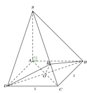
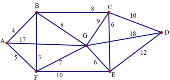
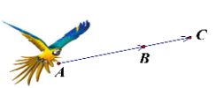
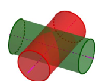
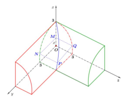

ĐỀ THI TOÁN - ĐỀ SỐ 01 HOT
Phần I: Trắc Nghiệm Nhiều Lựa Chọn
Tóm tắt kiến thức: Nguyên hàm
Nếu \( \int f(x) \, dx = F(x) + C \), thì \( f(x) = F'(x) \).
Câu 1:
Cho \( \int f(x) \, dx = -\cos x + C \). Khẳng định nào đúng?
Chọn đáp án:
Lời giải:
\( \int f(x) \, dx = -\cos x + C \). Do đó, \( f(x) = \frac{d}{dx}(-\cos x) = \sin x \).
Đáp án: C.
Tóm tắt kiến thức: Diện tích hình phẳng
Diện tích hình phẳng giới hạn bởi các đường \( y = f(x) \), \( y = g(x) \), \( x = a \), \( x = b \): \( S = \int_a^b |f(x) - g(x)| \, dx \).

Câu 2:
Cho hình phẳng được tô màu trong hình bên. Diện tích hình phẳng tô màu là:
Chọn đáp án:
Lời giải:
Diện tích hình phẳng tô màu được tính bởi:
\( S = \int_0^2 \left| x + 1 - \left(\frac{1}{2}\right)^x \right| \, dx \).
Vì \( x + 1 \geq \left(\frac{1}{2}\right)^x \) trên \([0, 2]\), nên:
\( S = \int_0^2 \left[ x + 1 - \left(\frac{1}{2}\right)^x \right] \, dx \).
Đáp án: A.
Tóm tắt kiến thức: Độ lệch chuẩn
Trung bình: \( \bar{x} = \frac{\sum x_i n_i}{\sum n_i} \).
Phương sai: \( s^2 = \frac{1}{n} \sum n_i (x_i - \bar{x})^2 \).
Độ lệch chuẩn: \( s = \sqrt{s^2} \).
Câu 3:
Bảng 1 và Bảng 2 lần lượt biểu diễn mẫu số liệu ghép nhóm về nhiệt độ không khí trung bình các tháng năm 2021 tại Hà Nội và Huế. Dựa vào độ lệch chuẩn, khẳng định nào đúng?
| Nhóm | Giá trị đại diện | Tần số (Hà Nội) | Tần số (Huế) |
|---|---|---|---|
| \([16,8; 19,8)\) | 18,3 | 2 | 1 |
| \([19,8; 22,8)\) | 21,3 | 3 | 2 |
| \([22,8; 25,8)\) | 24,3 | 2 | 3 |
| \([25,8; 28,8)\) | 27,3 | 1 | 2 |
| \([28,8; 31,8)\) | 30,3 | 4 | 4 |
Chọn đáp án:
Lời giải:
Hà Nội:
Trung bình: \( \bar{x}_1 = \frac{2 \cdot 18,3 + 3 \cdot 21,3 + 2 \cdot 24,3 + 1 \cdot 27,3 + 4 \cdot 30,3}{12} = 24,8^\circ \text{C} \).
Phương sai: \( s_1^2 = \frac{2 \cdot (18,3 - 24,8)^2 + 3 \cdot (21,3 - 24,8)^2 + 2 \cdot (24,3 - 24,8)^2 + 1 \cdot (27,3 - 24,8)^2 + 4 \cdot (30,3 - 24,8)^2}{12} \approx 20,75 \).
Độ lệch chuẩn: \( s_1 = \sqrt{20,75} \approx 4,56^\circ \text{C} \).
Huế:
Trung bình: \( \bar{x}_2 = \frac{1 \cdot 18,3 + 2 \cdot 21,3 + 3 \cdot 24,3 + 2 \cdot 27,3 + 4 \cdot 30,3}{12} = 25,8^\circ \text{C} \).
Phương sai: \( s_2^2 = \frac{1 \cdot (18,3 - 25,8)^2 + 2 \cdot (21,3 - 25,8)^2 + 3 \cdot (24,3 - 25,8)^2 + 2 \cdot (27,3 - 25,8)^2 + 4 \cdot (30,3 - 25,8)^2}{12} \approx 15,75 \).
Độ lệch chuẩn: \( s_2 = \sqrt{15,75} \approx 3,97^\circ \text{C} \).
Vì \( s_2 < s_1 \), Huế có nhiệt độ trung bình tháng đồng đều hơn Hà Nội.
Đáp án: B.
Tóm tắt kiến thức: Đường thẳng vuông góc với mặt phẳng
Đường thẳng vuông góc với mặt phẳng có vector chỉ phương là vector pháp tuyến của mặt phẳng.
Câu 4:
Trong không gian \( Oxyz \), cho ba điểm \( A(1; 2; -1) \), \( B(3; 0; 1) \), \( C(2; 2; -2) \). Đường thẳng đi qua \( A \) và vuông góc với mặt phẳng \( (ABC) \) có phương trình là:
Chọn đáp án:
Lời giải:
Vector \( \vec{AB} = (2; -2; 2) \), \( \vec{AC} = (1; 0; -1) \).
Vector pháp tuyến của \( (ABC) \): \( \vec{n} = \vec{AB} \times \vec{AC} = (2; 4; 2) = 2(1; 2; 1) \).
Đường thẳng đi qua \( A(1; 2; -1) \) và vuông góc với \( (ABC) \) có vector chỉ phương \( (1; 2; 1) \), phương trình:
\( \frac{x-1}{1} = \frac{y-2}{2} = \frac{z+1}{1} \).
Đáp án: D.
Tóm tắt kiến thức: Tiệm cận xiên
Hàm số \( y = f(x) \) có tiệm cận xiên \( y = mx + n \) nếu \( \lim_{x \to \pm \infty} [f(x) - (mx + n)] = 0 \).
Câu 5:
Cho hàm số \( y = f(x) \) có đồ thị như hình vẽ. Tiệm cận xiên của đồ thị hàm số là:

Chọn đáp án:
Lời giải:
Dựa vào đồ thị, hàm số có tiệm cận xiên là \( y = x + 1 \).
Đáp án: D.
Tóm tắt kiến thức: Góc nhị diện
Góc nhị diện tại đỉnh của hình chóp là góc giữa hai mặt phẳng chứa các cạnh liên quan.
Câu 6:
Cho hình chóp \( S.ABC \) có đáy \( ABC \) là tam giác vuông cân tại \( A \), \( AB = a\sqrt{2} \). Biết \( SA \perp (ABC) \) và \( SA = a \). Góc nhị diện \( [S, BC, A] \) có số đo bằng:
Chọn đáp án:
Lời giải:
 Kẻ \( AM \perp BC \) tại \( M \), \( M \) là trung điểm của \( BC \). Vì \( \triangle ABC \) vuông cân tại \( A \), \( AB = a\sqrt{2} \), nên \( BC = (a\sqrt{2})\sqrt{2} = 2a \), \( AM = \frac{BC}{2} = a \).
Kẻ \( AM \perp BC \) tại \( M \), \( M \) là trung điểm của \( BC \). Vì \( \triangle ABC \) vuông cân tại \( A \), \( AB = a\sqrt{2} \), nên \( BC = (a\sqrt{2})\sqrt{2} = 2a \), \( AM = \frac{BC}{2} = a \).
Góc nhị diện \( [S, BC, A] \) là góc giữa \( (SBC) \) và \( (ABC) \), tức góc \( \angle SMA \).
Trong \( \triangle SAM \), \( SA = a \), \( AM = a \), nên \( \tan \angle SMA = \frac{SA}{AM} = \frac{a}{a} = 1 \Rightarrow \angle SMA = 45^\circ \).
Đáp án: C.
Tóm tắt kiến thức: Mặt phẳng song song
Mặt phẳng song song với mặt phẳng \( ax + by + cz + d = 0 \) có dạng \( ax + by + cz + k = 0 \).
Câu 7:
Trong không gian \( Oxyz \), cho điểm \( A(0; -3; 2) \) và mặt phẳng \( (P): 2x - y + 3z + 5 = 0 \). Mặt phẳng đi qua \( A \) và song song với \( (P) \) có phương trình là:
Chọn đáp án:
Lời giải:
Mặt phẳng song song với \( (P): 2x - y + 3z + 5 = 0 \) có dạng \( 2x - y + 3z + d = 0 \).
Đi qua \( A(0; -3; 2) \): \( 2 \cdot 0 - (-3) + 3 \cdot 2 + d = 0 \Rightarrow 3 + 6 + d = 0 \Rightarrow d = -9 \).
Phương trình: \( 2x - y + 3z - 9 = 0 \).
Đáp án: D.
Tóm tắt kiến thức: Bất phương trình mũ
Cho \( a^{f(x)} < a^c \), nếu \( a > 1 \), thì \( f(x) < c \).
Câu 8:
Tập nghiệm của bất phương trình \( 3^{x^2 - 23} < 9 \) là:
Chọn đáp án:
Lời giải:
\( 3^{x^2 - 23} < 9 = 3^2 \Rightarrow x^2 - 23 < 2 \Rightarrow x^2 < 25 \Rightarrow -5 < x < 5 \).
Tập nghiệm: \( (-5; 5) \).
Đáp án: A.
Tóm tắt kiến thức: Phương trình mũ
Phương trình \( a^{f(x)} = a^c \Rightarrow f(x) = c \).
Câu 9:
Nghiệm của phương trình \( 3^{4x} = \frac{1}{3\sqrt{3}} \) là:
Chọn đáp án:
Lời giải:
\( 3^{4x} = \frac{1}{3\sqrt{3}} = 3^{-1} \cdot 3^{-\frac{1}{2}} = 3^{-\frac{3}{2}} \).
\( 4x = -\frac{3}{2} \Rightarrow x = -\frac{3}{8} \).
Đáp án: B.
Tóm tắt kiến thức: Cấp số nhân
Công thức số hạng: \( u_n = u_1 q^{n-1} \).
Câu 10:
Cho cấp số nhân có số hạng đầu \( u_1 = -2 \), công bội \( q = \frac{3}{4} \). Số \( -\frac{81}{128} \) là số hạng thứ mấy của cấp số này?
Chọn đáp án:
Lời giải:
\( u_n = -2 \cdot \left(\frac{3}{4}\right)^{n-1} = -\frac{81}{128} \).
\( -2 \cdot \left(\frac{3}{4}\right)^{n-1} = -\frac{81}{128} \Rightarrow \left(\frac{3}{4}\right)^{n-1} = \frac{81}{128} \cdot \frac{1}{2} = \left(\frac{3}{4}\right)^4 \).
\( n - 1 = 4 \Rightarrow n = 5 \).
Đáp án: A.
Tóm tắt kiến thức: Trọng tâm tứ diện
Trong tứ diện, trọng tâm \( G \): \( \vec{OG} = \frac{1}{4}(\vec{OA} + \vec{OB} + \vec{OC} + \vec{OD}) \).
Câu 11:
Cho hình tứ diện \( ABCD \) có trọng tâm \( G \) và \( O \) là một điểm bất kỳ. Mệnh đề nào sau đây đúng?
Chọn đáp án:
Lời giải:
Theo quy tắc trọng tâm tứ diện: \( \vec{OG} = \frac{1}{4}(\vec{OA} + \vec{OB} + \vec{OC} + \vec{OD}) \).
Đáp án: C.
Tóm tắt kiến thức: Tính đơn điệu
Hàm số nghịch biến trên khoảng mà \( f'(x) < 0 \).
Câu 12:
Cho hàm số \( y = f(x) \) có bảng biến thiên như sau:

Hàm số nghịch biến trên khoảng nào dưới đây?
Chọn đáp án:
Lời giải:
Từ bảng biến thiên, \( f'(x) < 0 \) trên \( (-\infty; -1) \cup (0; 1) \), nên hàm số nghịch biến trên \( (0; 1) \).
Đáp án: B.
Phần II: Trắc Nghiệm Đúng/Sai
Tóm tắt kiến thức: Hàm số lượng giác
Đạo hàm: \( \frac{d}{dx} \sin 2x = 2 \cos 2x \).
Giá trị cực trị tìm bằng cách giải \( f'(x) = 0 \).
Câu 13:
Cho hàm số \( f(x) = \sin 2x + x \). Xét các phát biểu sau:
Chọn đáp án cho từng phát biểu:
a)
b)
c)
d)
Lời giải:
a) Đúng. \( f(0) = \sin 0 + 0 = 0 \); \( f(\pi) = \sin 2\pi + \pi = \pi \).
b) Sai. \( f'(x) = 2 \cos 2x + 1 \), không phải \( \cos 2x + 1 \).
c) Đúng. \( f'(x) = 2 \cos 2x + 1 = 0 \Rightarrow \cos 2x = -\frac{1}{2} \Rightarrow 2x = \frac{2\pi}{3} + k\pi \). Trong \( [0; \pi] \), \( x = \frac{\pi}{3} \), \( \frac{2\pi}{3} \).
d) Sai. Tính \( f(x) \) tại \( x = 0 \), \( \frac{\pi}{3} \), \( \frac{2\pi}{3} \), \( \pi \): \( f(0) = 0 \), \( f\left(\frac{\pi}{3}\right) = \frac{\sqrt{3}}{2} + \frac{\pi}{3} \), \( f\left(\frac{2\pi}{3}\right) = -\frac{\sqrt{3}}{2} + \frac{2\pi}{3} \), \( f(\pi) = \pi \). Giá trị lớn nhất là \( f(\pi) = \pi \).
Đáp án: a) Đúng, b) Sai, c) Đúng, d) Sai.
Tóm tắt kiến thức: Chuyển động chậm dần đều
Quãng đường: \( s(t) = \int v(t) \, dt \). Tốc độ \( v(t) = 0 \) khi dừng.
Câu 14:
Một xe ô tô đang chạy với tốc độ 65 km/h thì người lái xe phát hiện chướng ngại vật cách 50 m. Người lái phản ứng trong 1 giây, sau đó đạp phanh khẩn cấp. Từ lúc đạp phanh, ô tô chuyển động chậm dần đều với tốc độ \( v(t) = -10t + 20 \) (m/s). Xét các phát biểu:
Chọn đáp án cho từng phát biểu:
a)
b)
c)
d)
Lời giải:
a) Đúng. \( s'(t) = v(t) \), nên \( s(t) \) là nguyên hàm của \( v(t) \).
b) Đúng. \( s(t) = \int (-10t + 20) \, dt = -5t^2 + 20t + C \). Tại \( t = 0 \), \( s(0) = 0 \Rightarrow C = 0 \), nên \( s(t) = -5t^2 + 20t \).
c) Sai. Xe dừng khi \( v(t) = -10t + 20 = 0 \Rightarrow t = 2 \) giây, không phải 20 giây.
d) Đúng. Tốc độ 65 km/h \( \approx 18 \, \text{m/s} \). Quãng đường trong 1 giây phản ứng: \( 18 \cdot 1 = 18 \, \text{m} \). Quãng đường từ lúc phanh: \( s(2) = -5 \cdot 2^2 + 20 \cdot 2 = 20 \, \text{m} \). Tổng quãng đường: \( 18 + 20 = 38 \, \text{m} < 50 \, \text{m} \), nên không va chạm.
Đáp án: a) Đúng, b) Đúng, c) Sai, d) Đúng.
Tóm tắt kiến thức: Xác suất có điều kiện
Xác suất toàn phần: \( P(B) = P(A) \cdot P(B|A) + P(\bar{A}) \cdot P(B|\bar{A}) \).
Công thức Bayes: \( P(A|B) = \frac{P(A) \cdot P(B|A)}{P(B)} \).
Câu 15:
Trong tỉnh Khánh Hòa, tỷ lệ người nghiện thuốc lá là 20%, tỷ lệ người bị bệnh phổi trong số người nghiện thuốc là 70%, trong số người không nghiện là 15%. Khi gặp ngẫu nhiên một người, xét các phát biểu:
Chọn đáp án cho từng phát biểu:
a)
b)
c)
d)
Lời giải:
Gọi \( A \): Người nghiện thuốc lá; \( B \): Người bị bệnh phổi.
\( P(A) = 0,2 \), \( P(\bar{A}) = 0,8 \), \( P(B|A) = 0,7 \), \( P(B|\bar{A}) = 0,15 \).
a) Sai. \( P(B|A) = 0,7 \neq 0,3 \).
b) Đúng. \( P(B) = P(A) \cdot P(B|A) + P(\bar{A}) \cdot P(B|\bar{A}) = 0,2 \cdot 0,7 + 0,8 \cdot 0,15 = 0,14 + 0,12 = 0,26 = 26\% \).
c) Sai. \( P(A|B) = \frac{P(A) \cdot P(B|A)}{P(B)} = \frac{0,2 \cdot 0,7}{0,26} = \frac{7}{13} \neq \frac{6}{13} \).
d) Đúng. \( P(B|\bar{A}) = 0,15 \).
Đáp án: a) Sai, b) Đúng, c) Sai, d) Đúng.
Tóm tắt kiến thức: Phương trình tham số và góc
Phương trình tham số đường thẳng: \( x = x_0 + at \), \( y = y_0 + bt \), \( z = z_0 + ct \).
Góc giữa đường thẳng và mặt phẳng: \( \sin \theta = \frac{|\vec{u} \cdot \vec{n}|}{|\vec{u}| \cdot |\vec{n}|} \).
Câu 16:
Trong không gian \( Oxyz \), một cabin cáp treo xuất phát từ \( A(6; 4; 1) \) và chuyển động đều theo đường cáp có vector chỉ phương \( \vec{u} = (2; -1; -2) \), tốc độ 5 m/s. Xét các phát biểu:
Chọn đáp án cho từng phát biểu:
a)
b)
c)
d)
Lời giải:
a) Đúng. Đường thẳng qua \( A(6; 4; 1) \), vector chỉ phương \( \vec{u} = (2; -1; -2) \), phương trình: \( \left\{ \begin{array}{l} x = 6 + 2t \\ y = 4 - t \\ z = 1 - 2t \end{array} \right. \).
b) Sai. Tốc độ 5 m/s, \( |\vec{u}| = \sqrt{4 + 1 + 4} = 3 \). Vector \( \vec{AM} = \frac{5t}{3} \vec{u} = \left( \frac{10t}{3}; -\frac{5t}{3}; -\frac{10t}{3} \right) \). Tọa độ \( M \): \( \left( \frac{10t}{3} + 6; -\frac{5t}{3} + 4; -\frac{10t}{3} + 1 \right) \).
c) Đúng. \( y_B = -396 \Rightarrow -\frac{5t}{3} + 4 = -396 \Rightarrow t = 240 \). Tọa độ \( B(806; -396; -799) \). \( AB = \sqrt{(806-6)^2 + (-396-4)^2 + (-799-1)^2} = 1200 \, \text{m} \).
d) Sai. Góc giữa đường thẳng và \( (Oxz) \): \( \sin \theta = \frac{|\vec{u} \cdot (0; 1; 0)|}{|\vec{u}| \cdot |(0; 1; 0)|} = \frac{|-1|}{3 \cdot 1} = \frac{1}{3} \Rightarrow \theta \approx 19^\circ \), không phải \( 47^\circ \).
Đáp án: a) Đúng, b) Sai, c) Đúng, d) Sai.
Phần III: Trắc Nghiệm Trả Lời Ngắn
Tóm tắt kiến thức: Thể tích hình chóp
Thể tích hình chóp: \( V = \frac{1}{3} S_{\text{đáy}} \cdot h \).
Câu 17:
Cho hình chóp \( S.ABCD \) có đáy \( ABCD \) là hình vuông cạnh 3, \( SA \) vuông góc với mặt phẳng đáy. Biết số đo của góc nhị diện \( [B, SC, D] = 120^\circ \). Tính thể tích khối chóp \( S.ABCD \).
Nhập đáp án:
Lời giải:

Vì \( ABCD \) là hình vuông, \( BD \perp AC \), \( SA \perp (ABCD) \), nên \( BD \perp (SAC) \), \( BD \perp SC \).
Kẻ \( DH \perp SC \), \( H \in SC \). \( SC \perp (BHD) \), \( BH \in (BHD) \Rightarrow SC \perp BH \Rightarrow \angle BHD = 120^\circ \).
Trong \( \triangle HBD \) cân tại \( H \), \( \angle DHO = 60^\circ \), \( DO = \frac{BD}{2} = \frac{3\sqrt{2}}{2} \), \( OH = \frac{DO}{\tan 60^\circ} = \frac{\sqrt{6}}{2} \).
Trong \( \triangle OHC \), \( \sin \angle OCH = \frac{OH}{OC} = \frac{\sqrt{6}/2}{3\sqrt{2}/2} = \frac{\sqrt{3}}{3} \). Suy ra \( \cot \angle SAC = \frac{1}{\sin^2 \angle SAC} - 1 = \sqrt{2} \Rightarrow \tan \angle SAC = \frac{1}{\sqrt{2}} \).
Trong \( \triangle SAC \), \( SA = \tan \angle SAC \cdot AC = \frac{1}{\sqrt{2}} \cdot 3\sqrt{2} = 3 \).
Thể tích: \( V = \frac{1}{3} \cdot 3 \cdot 3 \cdot 3 = 9 \).
Đáp án: 9.
Tóm tắt kiến thức: Đường đi Euler
Đường đi Euler đi qua mỗi cạnh đúng một lần. Thời gian ngắn nhất bao gồm đường Euler và đường ngắn nhất về điểm xuất phát.
Câu 18:
Một bác shipper xuất phát từ kho \( A \), giao hàng qua tất cả các con đường rồi trở về kho \( A \). Thời gian (phút) trên mỗi con đường được mô tả trong hình. Thời gian ngắn nhất để hoàn thành công việc là bao nhiêu phút?
Nhập đáp án:
Lời giải:
Đồ thị có đỉnh \( A \) và \( D \) bậc lẻ. Đường đi Euler từ \( A \) đến \( D \): \( A \to B \to C \to D \to E \to C \to E \to G \to E \to F \to G \to B \to F \to A \to G \to D \), thời gian: \( 4 + 8 + 10 + 12 + 6 + 9 + 6 + 10 + 7 + 8 + 3 + 5 + 17 + 18 = 123 \) phút.
Đường ngắn nhất từ \( D \) về \( A \): \( D \to C \to B \to A \), thời gian: \( 10 + 8 + 4 = 22 \) phút.
Tổng thời gian: \( 123 + 22 = 145 \) phút.
Đáp án: 145.
Tóm tắt kiến thức: Chuyển động thẳng đều
Tọa độ điểm sau thời gian \( t \): \( \vec{r}(t) = \vec{r}_0 + \vec{v}t \).
Câu 19:
Một con chim đại bàng bay với tốc độ và hướng không đổi từ \( A(20; 40; 30) \) đến \( B(40; 50; 50) \) trong 4 phút. Nếu tiếp tục bay, sau 2 phút nó ở vị trí \( C(a; b; c) \). Tính \( a + b + c \).
Nhập đáp án:
Lời giải:
\( \vec{AB} = (40-20; 50-40; 50-30) = (20; 10; 20) \). Thời gian từ \( A \) đến \( B \) gấp đôi từ \( B \) đến \( C \), nên \( \vec{AB} = 2 \vec{BC} \).
\( \vec{BC} = \left( \frac{20}{2}; \frac{10}{2}; \frac{20}{2} \right) = (10; 5; 10) \).
Tọa độ \( C \): \( (40 + 10; 50 + 5; 50 + 10) = (50; 55; 60) \).
\( a + b + c = 50 + 55 + 60 = 165 \).
Đáp án: 165.
Tóm tắt kiến thức: Thể tích giao của hai trụ
Thể tích phần giao của hai trụ vuông góc: \( V = 8 \int_0^R (R^2 - x^2) \, dx \).
Câu 20:
Cho hai khối trụ có bán kính đáy bằng 3, trục cắt nhau vuông góc. Gọi \( (H) \) là phần giao nhau của hai khối trụ. Tính thể tích của \( (H) \).
Nhập đáp án:
Lời giải:

Mặt cắt của phần giao \( (D) \) tại \( x \) (song song với \( Oyz \)) là hình vuông cạnh \( \sqrt{9 - x^2} \), diện tích \( 9 - x^2 \).
Thể tích \( (D) \): \( V_{(D)} = \int_0^3 (9 - x^2) \, dx = \left[ 9x - \frac{x^3}{3} \right]_0^3 = 27 - 9 = 18 \).
Thể tích \( (H) \): \( V_{(H)} = 8 \cdot V_{(D)} = 8 \cdot 18 = 144 \).
Đáp án: 144.
Tóm tắt kiến thức: Tối ưu hóa
Lợi nhuận cực đại đạt khi \( P'(x) = 0 \) và \( P''(x) < 0 \).
Câu 21:
Nhà máy \( A \) cung cấp sản phẩm cho nhà máy \( B \), tối đa 100 tấn/tháng. Giá bán mỗi tấn: \( P(x) = 45 - 0,001x^2 \) (triệu đồng). Chi phí sản xuất: \( C(x) = 100 + 30x \) (triệu đồng). Để lợi nhuận lớn nhất, \( A \) cần bán bao nhiêu tấn? (Làm tròn đến hàng đơn vị).
Nhập đáp án:
Lời giải:
Doanh thu: \( R(x) = x \cdot (45 - 0,001x^2) = 45x - 0,001x^3 \).
Lợi nhuận: \( P(x) = R(x) - C(x) = 45x - 0,001x^3 - (100 + 30x) = -0,001x^3 + 15x - 100 \).
\( P'(x) = -0,003x^2 + 15 = 0 \Rightarrow x^2 = 5000 \Rightarrow x = 50\sqrt{2} \approx 70,71 \).
\( P''(x) = -0,006x < 0 \), nên \( x = 50\sqrt{2} \) là cực đại.
So sánh: \( P(0) = -100 \), \( P(50\sqrt{2}) \approx 607 \), \( P(100) = 400 \).
Làm tròn: \( 50\sqrt{2} \approx 71 \).
Đáp án: 71.
Tóm tắt kiến thức: Xác suất có điều kiện
Công thức Bayes: \( P(A|B) = \frac{P(A) \cdot P(B|A)}{P(A) \cdot P(B|A) + P(\bar{A}) \cdot P(B|\bar{A})} \).
Câu 22:
Một hộp chứa 9 tấm thẻ đánh số từ 1 đến 9. An lấy ngẫu nhiên 1 thẻ, xem số rồi bỏ ra ngoài. Nếu số chẵn, An thêm thẻ số 10, 11; nếu lẻ, thêm thẻ số 12, 13, 14. Sau đó, Việt lấy ngẫu nhiên đồng thời 3 thẻ. Gọi \( X \) là tích các số trên thẻ Việt lấy. Tính xác suất An lấy thẻ chẵn biết rằng \( X \) chia hết cho 2. (Làm tròn đến hai chữ số thập phân).
Nhập đáp án:
Lời giải:
Gọi \( A \): An lấy thẻ chẵn; \( B \): \( X \) chia hết cho 2.
\( P(A) = \frac{4}{9} \) (thẻ chẵn: 2, 4, 6, 8), \( P(\bar{A}) = \frac{5}{9} \).
Nếu \( A \): Hộp có 10 thẻ (1–9, 10, 11), lấy 3 thẻ, \( P(B|A) = 1 - \frac{C_6^3}{C_{10}^3} = 1 - \frac{20}{120} = \frac{5}{6} \).
Nếu \( \bar{A} \): Hộp có 11 thẻ (1–9, 12, 13, 14), \( P(B|\bar{A}) = 1 - \frac{C_4^3}{C_{11}^3} = 1 - \frac{4}{165} = \frac{161}{165} \).
\( P(A|B) = \frac{P(A) \cdot P(B|A)}{P(A) \cdot P(B|A) + P(\bar{A}) \cdot P(B|\bar{A})} = \frac{\frac{4}{9} \cdot \frac{5}{6}}{\frac{4}{9} \cdot \frac{5}{6} + \frac{5}{9} \cdot \frac{161}{165}} = \frac{22}{53} \approx 0,42 \).
Đáp án: 0,42.